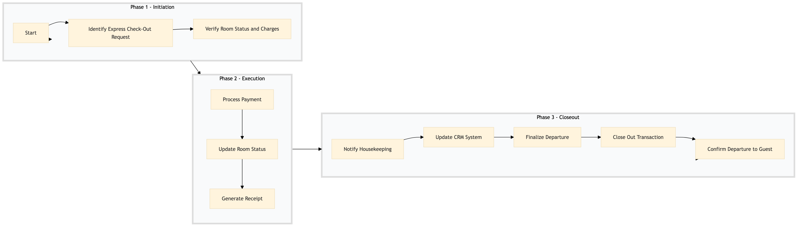

| Role | Steps |
|---|---|
| Front Desk Agent | 1.1 1.2 2.1 2.2 2.3 3.1 3.2 3.3 3.4 3.5 |
| Step | Name | Role | System | Input | Output | KPI | Dec? | Exc? | Pain Point / Risk |
|---|---|---|---|---|---|---|---|---|---|
| 1.1 | Identify Express Check-Out Request | Front Desk Agent | Oracle OPERA Cloud | Guest request | Express check-out flag set in PMS | less than 30 seconds | N | Y | Identifying express requests amidst high traffic |
| 1.2 | Verify Room Status and Charges | Front Desk Agent | Oracle OPERA Cloud | Room number | Room status and charges displayed | less than 1 minute | Y | N | Accurate room status verification |
| 2.1 | Process Payment | Front Desk Agent | Oracle OPERA Cloud | Payment details | Payment confirmation | less than 2 minutes | N | Y | Handling multiple payment methods |
| 2.2 | Update Room Status | Front Desk Agent | Oracle OPERA Cloud | Room number | Room status updated to 'Vacant' | less than 30 seconds | N | N | Ensuring room is marked as vacant immediately |
| 2.3 | Generate Receipt | Front Desk Agent | Oracle OPERA Cloud | Guest details and charges | Digital receipt sent to guest's email | less than 1 minute | N | Y | Email delivery issues |
| 3.1 | Notify Housekeeping | Front Desk Agent | Oracle OPERA Cloud | Room number | Housekeeping notification sent | less than 30 seconds | N | Y | Ensuring timely housekeeping notifications |
| 3.2 | Update CRM System | Front Desk Agent | Marriott Bonvoy CRM | Guest details and stay information | CRM record updated | less than 1 minute | N | Y | Data accuracy in CRM updates |
| 3.3 | Finalize Departure | Front Desk Agent | Oracle OPERA Cloud | Guest confirmation | Departure finalized | less than 1 minute | N | N | Handling last-minute changes |
| 3.4 | Close Out Transaction | Front Desk Agent | Oracle OPERA Cloud | Final payment details | Transaction closed | less than 2 minutes | N | Y | Closing transactions with multiple payments |
| 3.5 | Confirm Departure to Guest | Front Desk Agent | None | Guest presence | Departure confirmed verbally | less than 1 minute | N | Y | Ensuring guest satisfaction with express check-out |
Express check-out processing at a Marriott full-service hotel involves quickly finalizing guest departure procedures while ensuring all necessary tasks are completed efficiently.